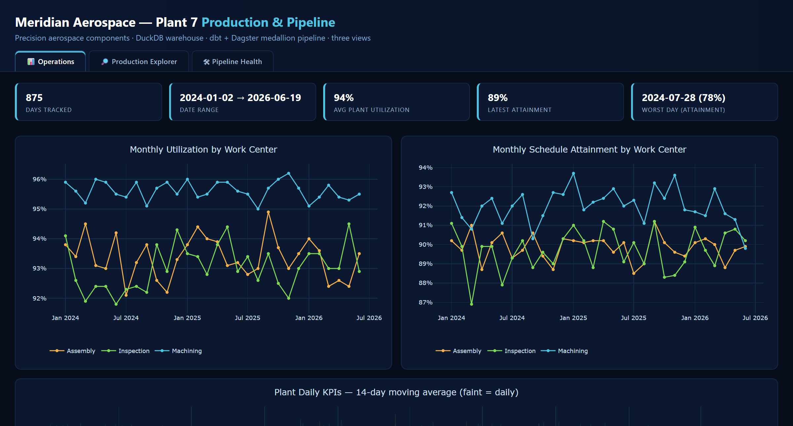

Manufacturing PDF → Warehouse
Medallion ELT · Dagster + dbt + DuckDB · Kimball star schema
A production-grade ELT pipeline that turns a plant’s daily PDF production reports into a tested, queryable analytics warehouse on a bronze / silver / gold medallion with a Kimball star schema — surfaced in a self-contained, interactive dashboard. Append-only lineage, a quarantine for bad rows, source-freshness & relationship tests, and architecture “fitness functions.” All data is synthetic and generated from scratch.